Projeto Final de Curso
“Prateleiras Eletrónicas”
e-Shelf
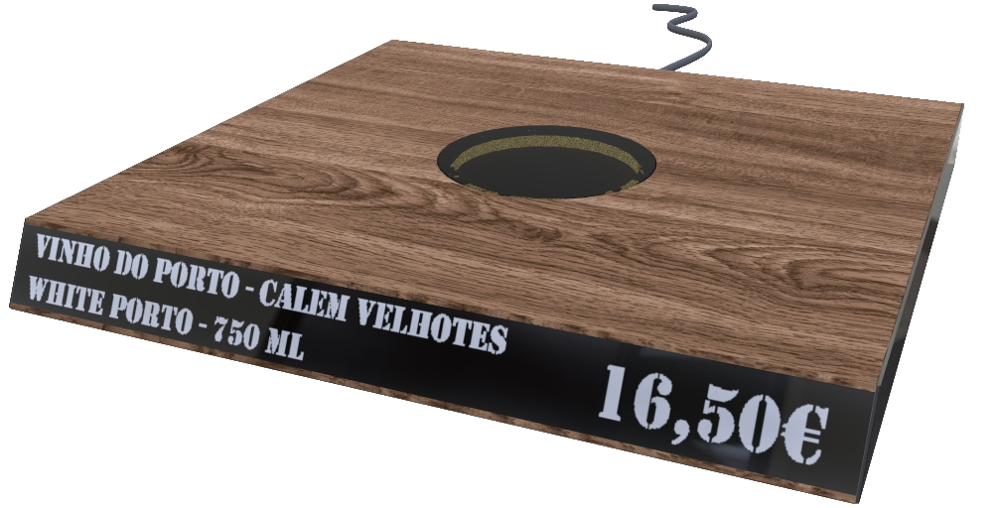“More Smart, Less Work”
O que é?
Este projeto tem como objetivo identificar os produtos que são colocados numa prateleira e apresentará a informação relativamente aos produtos retirando essa informação de uma base de dados.
Objetivos
- Substituir as tradicionais etiquetas (estáticas)
- Ajudar no processo de etiquetagem
- Funciona como markting destacando o produto
Problema
Segundo Autoridade de Segurança Alimentar e Economica (ASAE):
- Decreto de lei nº138/90 26 de abril
- D Decreto de lei nº162/99 13 de maio
“ Todos os bens destinados à venda a retalho devem exibir o respetivo preço de venda ao consumidor (preço total incluídas todas as taxas e impostos) através etiquetas, letreiros ou então listas. ”
Planeamento
- Metodologia de Kotonya-Sommerville (Waterfall)
- MS project
- Github
Gantt
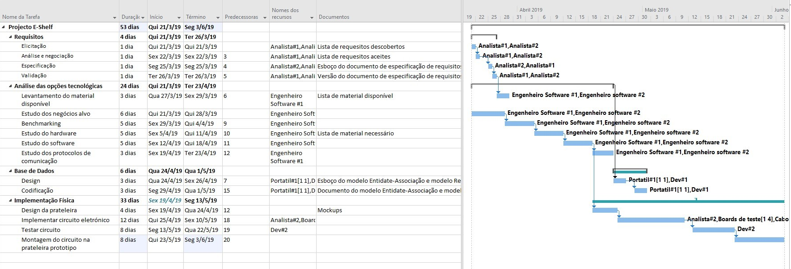Custos
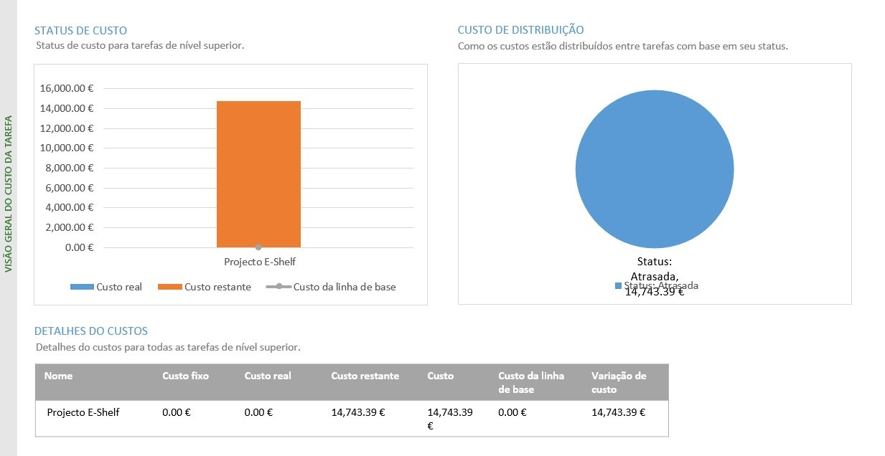Milestones/Labels
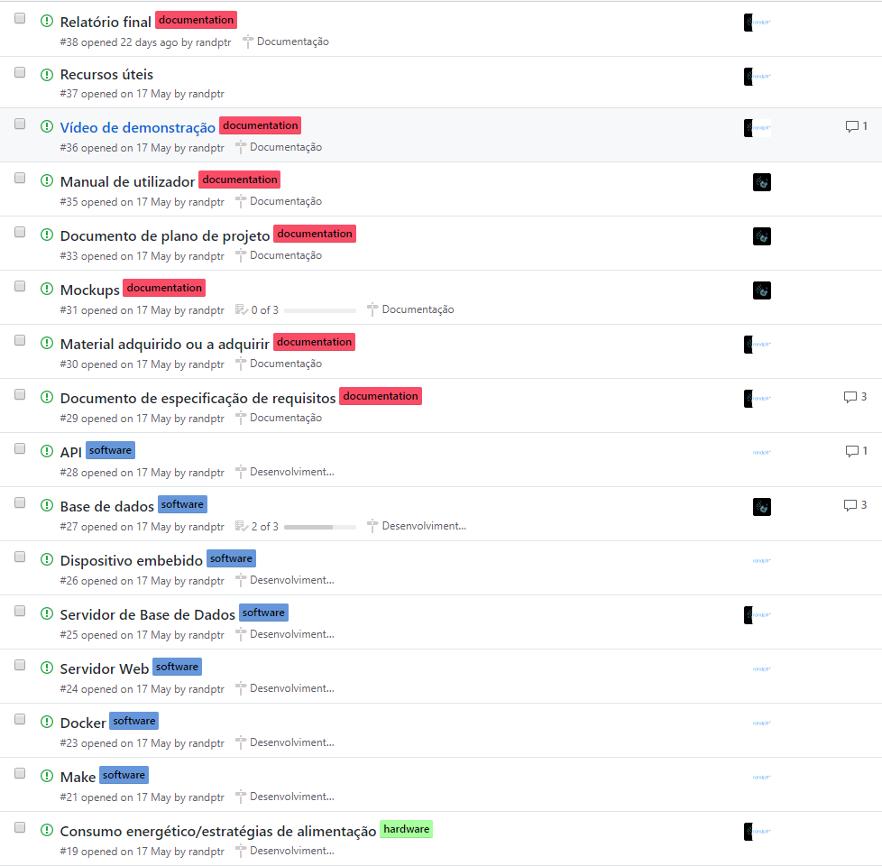Kanban
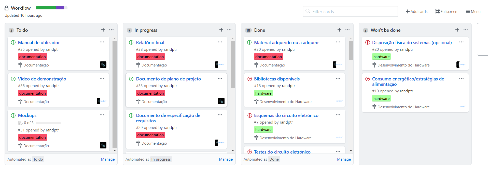Requisitos
Funcionais
- Microcontrolador utilizar wi-fi
- Cada microcontrolador possuir um só leitor NFC
- Tag permitir impressão código de barras
- Permitir escrita de tags
- Display apresentar pelo menos a informação modelo, preço, marca do produto
Não funcionais
- Prateleira read only
- Não interferir no design da loja
- Proteção de escrita das Tags
Benchmarking
Vários tipos de superfícies inteligentes:
- Estantes inteligentes
- Pisos inteligentes
- Painéis inteligentes
Base de Dados
Sugestão para uma loja de calçado
Modelo entidade-associação
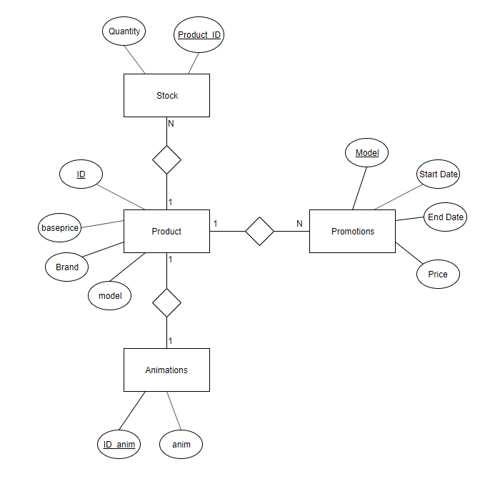NFC vs RFID
RFID
- Radio Frequency Identification
- 3 frequências
NFC
- Near field communication
- Subconjunto de RFID
- Frequência mais alta do espectro RFID
| RFID | NFC |
| Centrado para objetos | Centrado para utilizadores |
| Alcance maior (passivo: 1-10m; ativo: 10-100m) | Alcance menor (0-10cm) |
| É lido mais facilmente | Maior segurança |
| Guarda e transmite ID’s | Guarda e transmite vários tipos de dados |
| Leitor: Estrutura fixa/ dispositivo próprio | Leitor: Normalmente Smartphone |
NFC mais informações
Design
Esboço
Design da estrutura
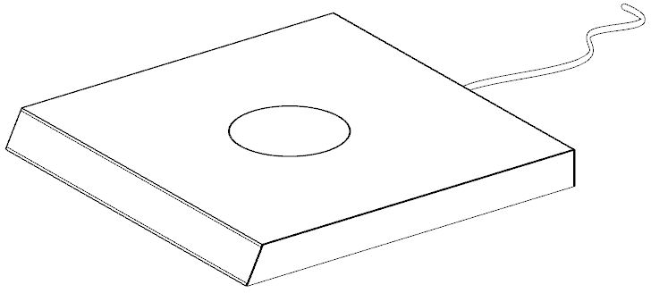Aplicando materiais

Proposta de aplicação
Loja de vinhos
Open source?
- Software de desenvolvimento
- Hardware
- Bibliotecas
- Esta apresentação
- Ferramentas da Microsoft
- Microsoft Project
- Microsoft Word
- Gestão do projecto
- GitHub
Git
Sistema de controlo de versões
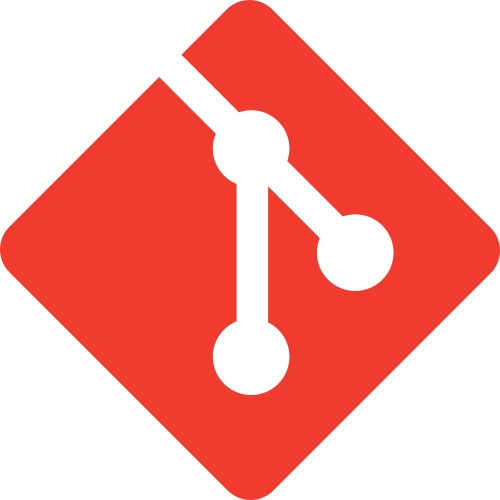Git checkout
Permite visualizar a árvore do repositório sob a perspectiva de determinada branch ou commit
git checkout <branch | commit_hash>
GitHub
Serviço de hospedagem para repositórios git
Estrutura do repositório
Módulos essenciais do sistema
- Dispositivo embebido
- Microcontrolador
- Ecrã OLED
- Leitor RFID
- API
- Base de dados
Microcontrolador
| 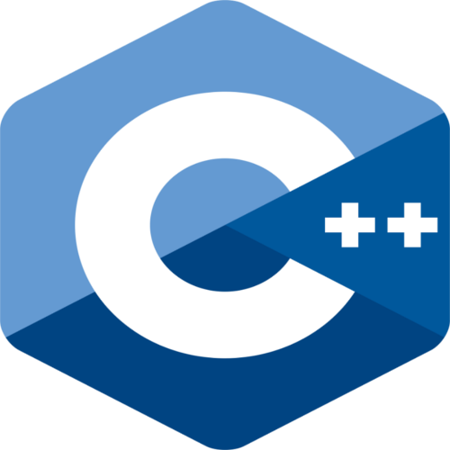 | 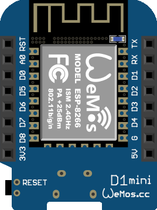 |
|---|---|
| C/C++ |
Espressif esp8266
(WeMos D1 Mini) |
Configuração Microcontrolador
#ifndef ssd1306_h
#define ssd1306_h
#define DISPLAY_WIDTH 128
#define DISPLAY_HIGHT 64
#define DISPLAY_ADDR 0x3C
#define DISPLAY_ADDR_ 0x3D
#define DISPLAY_BITMAP_MAX_SIZE DISPLAY_WIDTH * DISPLAY_HIGHT
#endif
API
| Python3 |
Flask
(Flask RESTful) |
Configuração API
{
"host": "0.0.0.0",
"port": "80"
}
Configuração API-BD
{
"configurations": {
"host": "eshelf_mysql",
"port": "3306",
"user": "eshelf",
"passwd": "change_this_pretty_bad_password",
"database": "eshelf"
},
"mappings": {
"table": "products",
"columns": {
"id": "prod_id",
"price": "current_price",
"currency": "currency_iso4217",
"item": "product",
"brand": "brand",
"model": "model",
"description": "description_text"
}
}
}
Base de dados
Configuração BD
db:
image: "mysql:8.0.15"
container_name: "eshelf_mysql"
environment:
MYSQL_RANDOM_ROOT_PASSWORD: "yes"
MYSQL_DATABASE: "eshelf"
MYSQL_USER: "eshelf"
MYSQL_PASSWORD: "change_this_pretty_bad_password"
volumes:
- "./db/data:/var/lib/mysql:rw"
ports:
- "5001:3306"
Fluxo de dados (Embebido)
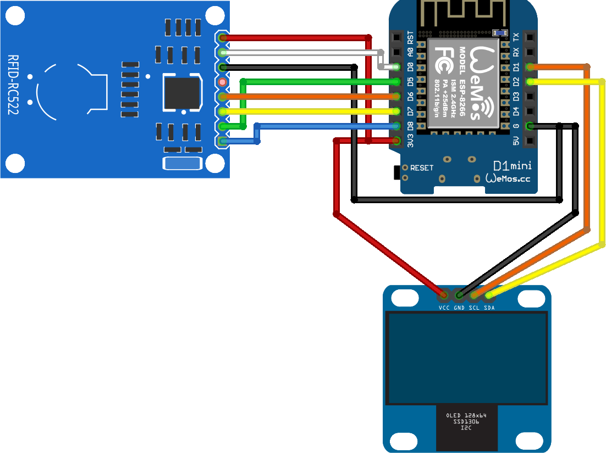Informação contida na tag
Exemplo
{
"id": "1234"
}
NTAG213
- 4 primeiros blocos reservados UID
- Últimos 4 blocos para configuração
- Memória (144 bytes)
- 36 páginas
- 4 bytes cada pagina
Fluxo de dados (Sistema)
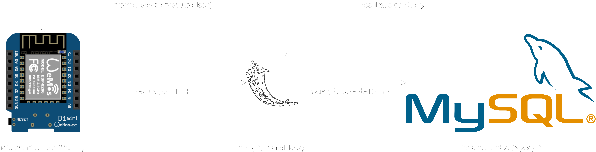Docker
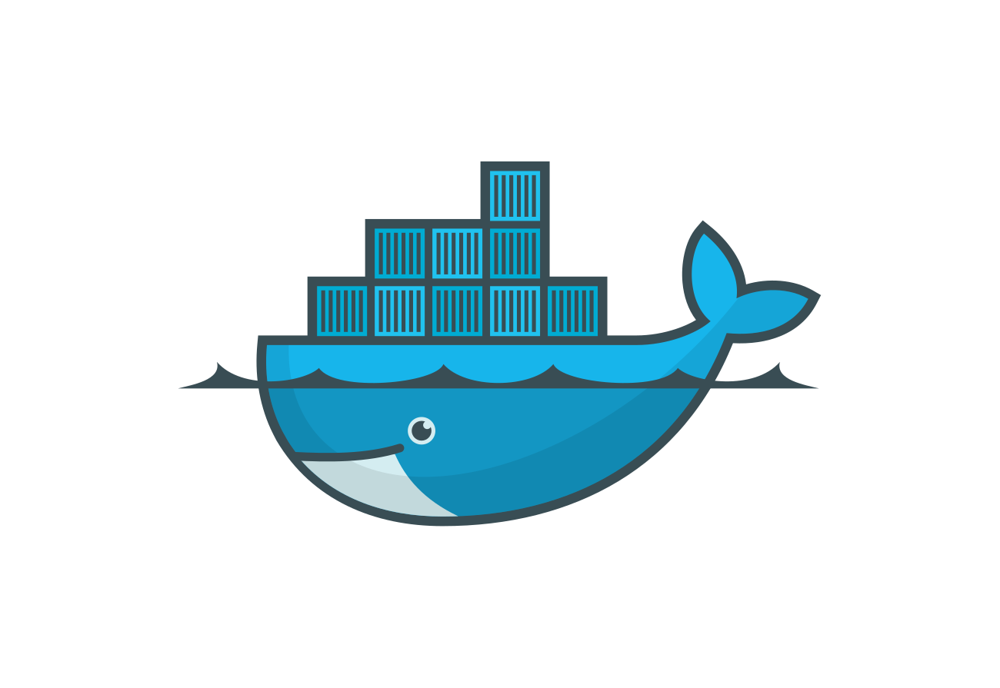O que é?
O Docker é um gestor de Containers gratuito e open source que funciona em praticamente todos os principais sistemas operativos dos quais se ressalta Windows, MacOS, sistemas baseados em Linux, sistemas baseados em BSD (versão beta)...
Docker compose
- Define dependências
- Reúne os containers
- Configura os containers
- Coloca em funcionamento
- Tudo em apenas um comando
cd <docker-compose_dir>
docker-compose up <--build>
Nota: Requer ficheiro de configuração
“docker-compose.yml”